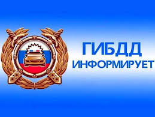
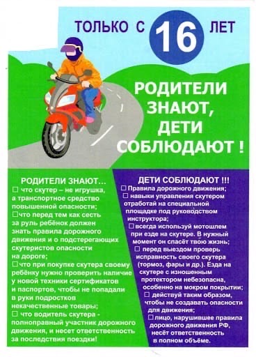
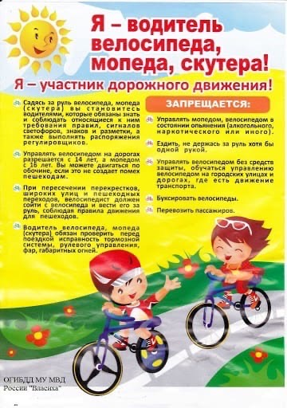
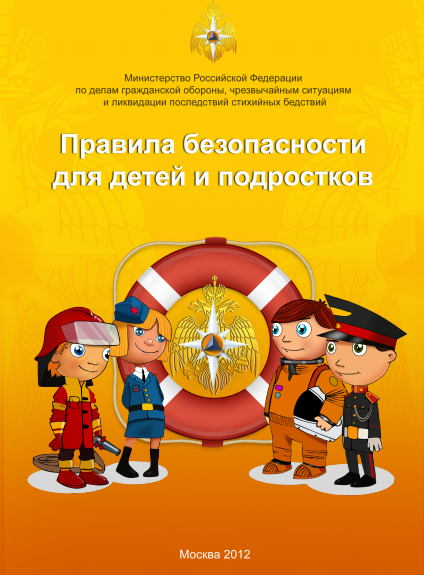

Безопасность на водоёмах
Правила безопасного поведения на воде
С наступлением купального сезона учащается количество несчастных случаев на воде. Главное управление МЧС России по Саратовской области обращается к жителям с просьбой более ответственно относиться к проведению своего отдыха вблизи рек и водоемов. Не забывайте простых правил, нарушение которых может стоить жизни Вам и Вашим близким:
Советы по поведению человека на воде:
Также полезно знать правила первой помощи пострадавшим при утоплении и тепловом ударе
Утопление - заполнение дыхательных путей жидкостью или жидкими массами. Признаками утопления являются выделение пены изо рта, остановка дыхания и сердечной деятельности, посинение кожных покровов, расширение зрачков.
Первая помощь:
После нормализации дыхания и сердечной деятельности пострадавшего следует согреть, укрыть и дождаться приезда медиков.
При длительном пребывании на солнце может возникнуть такое неотложное состояние как тепловой удар, чаще всего он может случиться у детей, проявляется он вначале тошнотой, затем рвотой, головной болью, повышением температуры до 39-40 градусов Цельсия, в тяжелых случаях сопровождается потерей сознания.
Пострадавшего срочно вынести в прохладное место, обеспечить доступ свежего воздуха, освободить от одежды, напоить холодной водой, наложить холодный компресс на голову. В более тяжелых случаях показано обертывание простыней, смоченной холодной водой, обливание прохладной водой, лед на голову и паховые области, можно дать понюхать вату, смоченную нашатырным спиртом. Оставаться рядом с пострадавшим до прибытия врачей.
Уважаемые сограждане! Будьте предельно внимательны, не дайте несчастным случаям омрачить Вашу жизнь!
УВАЖАЕМЫЕ РОДИТЕЛИ!
Безопасность жизни детей на водоемах во многих случаях зависит
ТОЛЬКО ОТ ВАС!
В целях недопущения гибели детей на водоемах в летний период обращаемся к Вам с убедительной просьбой: провести разъяснительную работу о правилах поведения на природных и искусственных водоемах и о последствиях их нарушения. Этим Вы предупредите несчастные случаи с Вашими детьми на воде, от этого зависит жизнь Ваших детей сегодня и завтра.
Категорически запрещено купание:
Необходимо соблюдать следующие правила:
Правила безопасности при нахождении на льду водоемов
Зима – чудесное время! Я знаю, что многие не согласятся со мной, сославшись на холод, снег, вечно замерзшие конечности и прочие неприятности, которые случаются преимущественно в зимний период. Однако, они просто не учитывают того количества интересных и захватывающих занятий, которые нам предоставляет зимний период. Тут и катание на санках, лыжах и коньках и простые игры в снежки и многое, многое другое. Одним из популярнейших зимних развлечений является зимняя подледная рыбалка. Однако при выборе именно такого времяпрепровождения каждый должен понимать и полностью осознавать тот риск, который он на себя берет. Дело в том, что лед на водоемах – это зона повышенного риска. Ежегодно погибает огромное количество людей именно из-за несоблюдения правил техники безопасности при нахождении на льду водоема. Но это не только рыбаки, увлекшиеся подледной рыбалкой, это и детишки, которые решили поиграть на льду или покататься по нему на коньках, да и просто те, кто решил срезать путь и пройти по льду.
Лед на водоемах – коварен и таит в себе огромную опасность. Дело в том, что водоемы замерзают неравномерно, а значит и толщина льда на всем его протяжении может изменяться в очень широком диапазоне. Таким образом, если вы вышли на лед в месте, где его толщина была сантиметров двадцать, то ничто не гарантирует вам того, что через несколько метров вы не попадете на участок с толщиной льда два сантиметра. А лед такой толщины едва ли выдержит взрослого человека.
Так что же делать, оказавшись в такой ситуации?
Единственное, чего не стоит делать точно, так это паниковать. Как только вы запаникуете, ваши шансы на удачное спасение стремительно уменьшаются. Если вы чувствуете, что лед под вами становится тоньше и начинает трескаться, необходимо медленно и аккуратно вернуться туда, где лед был толще. В таком случае нельзя начинать быстро бежать по льду. Такое поведение может лишь спровоцировать быстрый раскол поверхности.
Что делать, если вы все-таки провалились под лед?
Первое, что надо сделать – это позвать на помощь. В ледяной воде достаточно провести несколько минут, чтобы организм был охлажден до того состояния, из которого уже невозможно восстановление всех жизненно важных функций организма. Однако, в данной ситуации особенно важно, чтобы тот человек, который приходит на помощь, знал, как это правильно сделать. Чтобы вытащить человека, провалившегося под лед, ни в коем случае нельзя приближаться к краю проруби. Ведь если спасающий провалится к пострадавшему, то вряд ли это кому-то поможет. Только лишь усложнит спасение и подвергнет обоих еще большему смертельному риску. Необходимо найти палку или использовать одежду. Лежа на животе (так оказывается меньшее давление на единицу площади ледяной поверхности, а значит меньше вероятность дальнейшего разлома льда) необходимо протянуть палку или одежду пострадавшему, чтобы он схватился за нее. При этом второй конец должен оставаться в руках у спасающего. Необходимо действовать быстро, но без паники и суеты. Вытянув пострадавшего из проруби как можно быстрее, отнести его в безопасное место и вызвать скорую.
В ожидании приезда профессионалов необходимо оказать первую помощь, снимите с пострадавшего мокрую одежду и дайте ему сухую или заверните в одеяло. Оптимальным выходом будет согревание его теплом своего тела. Если есть горячее питье, то обязательно необходимо напоить. Нельзя погружать человека в горячую ванную. Такой резкий перепад температур может выдержать даже не всякое здоровое сердце. Если есть возможность погрузить человека в теплую воду, то лучше всего, если вода будет примерно температуры тела, около тридцати семи градусов. Потом, по степени отогревания пострадавшего возможен небольшой подогрев воды. Ну и, конечно же, не забывайте о теплом питье.
Даже если вы сразу же поместили пострадавшего в теплую ванную и напоили теплым чаем, если он уверяет, что чувствует себя хорошо и его ничего не беспокоит, скорую помощь вызывать нужно. Дело в том, что после шокового состояния и всего пережитого человек может просто не чувствовать каких-либо изменений, которые могли произойти с его организмом. А когда почувствует может быть поздно. В данной ситуации осмотр врача, его обследование и измерение наиболее важных показателей жизнедеятельности организма являются просто необходимыми. Ведь очень часто люди, провалившись под лед, погибают даже после того, как их уже спасли именно из-за переохлаждения и отказа жизненно-важных органов.
Зима – чудесное время. И не стоит впадать в спячку в ожидании лета. Гораздо лучше наслаждаться всеми теми удовольствиями, которые припас для нас мороз и снег. Однако, никогда не забывайте о правилах безопасности. Ведь, если следовать им вы убережете себя и своих близких от несчастья, а зима будет ассоциироваться только лишь с прекрасными развлечениями.
Итак, давайте еще раз кратко перечислим правила поведения на льду:
Эти простые и понятные правила помогут вам сохранить жизнь и здоровье и получать от зимы только лишь положительные эмоции.
Дорожная безопасность
Госавтоинспекция проведет профилактическое мероприятие «Перевози правильно – сохрани жизнь!»
С 04 по 10 июля 2022 года на территории Балашовского, Романовского, Самойловского муниципальных районах проводится профилактическое мероприятие «Перевози правильно – сохрани жизнь!», которое направленно на предупреждение дорожно-транспортных происшествий с участием детей-пассажиров, снижения тяжести последствий, а также привлечения внимания общественности и родительской аудитории к проблемам детского дорожного травматизма, повышения правосознания и культуры поведения на дороге среди взрослых участников дорожного движения, а также выявления и пресечения правонарушений водителями Правил дорожного движения, в том числе, в части использования детских удерживающих устройств и ремней безопасности.
Госавтоинспекция напоминает об обязательном использовании детских удерживающих устройств даже во время непродолжительных поездок от дома до детского сада или школы. С самого раннего возраста необходимо приучать ребенка к тому, что автокресло – это залог его безопасности в автомобиле.
За нарушение правил перевозки детей автомобильным транспортом предусмотрена административная ответственность по ч.3 ст. 12.23 КоАП РФ в виде штрафа в размере 3000 рублей.
Госавтоинспекция в очередной раз призывает автомобилистов со всей серьезностью отнестись к обеспечению безопасности перевозок маленьких пассажиров. Помните, что ни один штраф не сравнится с жизнью и здоровьем детей! Сберечь ребенка на дороге – долг каждого взрослого!
Госавтоинспекция МО МВД России «Балашовский» Саратовской области.
Уважаемые родители!
Мопед, велосипед, скутер, мотоцикл-предел желаний каждого мальчишки. Поэтому, уважаемые родители, отправляясь в магазин делать такие покупки для своего ребёнка, помните, что не случайно в Правилах дорожного движения есть раздел «Дополнительные требования к движению велосипедов, мопедов…». Ведь это транспортные средства.
Дорогие родители! Если Вы купили своему ребёнку мопед или скутер, не забывайте, что это не только дорогая и интересная игрушка, это — транспортное средство повышенной опасности, т.к. он может развивать скорость до 50 км/ч.
Разрешая своему ребёнку сесть за руль скутера или просто велосипеда, спросите себя, знает ли ребёнок основные правила движения, способен ли он адекватно реагировать на сложную, постоянно меняющуюся дорожную обстановку. Он должен хорошо освоить правила проезда равнозначных и неравнозначных, регулируемых и нерегулируемых перекрёстков, а также значения дорожных знаков, сигналы об изменении направления, сигналы светофора и регулировщика. Не забывайте, что выезжать на велосипеде на дороги общего пользования можно только с 14 лет, а на скутере — с 16 лет.
Ответственность за это и за техническое состояние транспортного средства вашего ребёнка, будь то велосипед или скутер, лежит на вас, родителях.
Не случайно инспекторы ГИБДД уделяют большое внимание безопасности водителя скутера или велосипеда, в случае ДТП травмы могут быть смертельными, т.к. водитель скутера или велосипеда более уязвим, так как не защищён конструкцией транспортного средства. В случае автоаварии водитель получает травмы головы, множественные ушибы и переломы конечностей. В большинстве случаев он погибает на месте ДТП…
Юный водитель должен уяснить, что перед тем, как выехать на дорогу с автомобильным движением, необходимо проверить исправность вашего транспортного средства. Тормоза и звуковой сигнал должны быть обязательно. При движении по дорогам в темное время суток и в условиях недостаточной видимости необходимо иметь спереди фонарь(фары) с белым светом, а сзади фонарь(фары) с красным светом и красным светоотражателем.
Водителям велосипеда и скутера запрещается: ездить, не держась за руль хотя бы одной рукой; перевозить пассажиров, кроме ребенка в возрасте до 7 лет при наличии дополнительного сиденья и подножками; двигаться по дорожке при наличии рядом велосипедной дорожки; поворачивать и разворачиваться на дорогах, имеющих более одной полосы для движения в данном направлении; буксировка.
Если ребенок будет соблюдать эти нехитрые требования, всегда пользоваться мотошлемом, он сможет избежать многих неприятностей, подстерегающих детей на дороге
Уважаемые взрослые, помните, что мы обязаны защитить наших детей от опасности на дороге, предостеречь их от непоправимых ошибок. Мы в ответе за безопасность своих детей!
 
Сотрудники Госавтоинспекции проведут профилактическое мероприятие «Безопасное лето!»
Перед началом летних каникул сотрудники Госавтоинспекции в период с 12 мая по 16 июня 2022 года на территории Балашовского, Романовского и Самойловского муниципальных районов проведут профилактическое мероприятие «Безопасное лето!».
Мероприятие посвящено детям и направлено на снижение числа аварий с участием маленьких граждан, предупреждение нарушений ПДД со стороны несовершеннолетних.
Анализ статистических данных позволяет констатировать, что количество дорожно-транспортных происшествий с участием несовершеннолетних детей во время школьных летних каникул растет. Начинаются летние отпуска, и дети как участники дорожного движения становятся пассажирами, водителями и пешеходами. В период летнего отдыха дети большей частью будут находиться на улицах, во дворах домов, школ и более подвержены риску попадания в ДТП.
ОГИБДД МО МВД России «Балашовский» напоминает самые основные Правила дорожного движения, которые помогут сохранить самое ценное – жизнь и здоровье:
Уважаемые родители!
Учите ребенка смотреть! У него должен быть выбран твердый навык, доведенный до автоматизма, - прежде чем сделать первый шаг с тротуара, необходимо осмотреть дорогу в обоих направлениях. И переходить проезжую часть только по пешеходному переходу.
Дети должны знать, что водитель не всегда может предотвратить аварию. Кроме того, среди водителей встречаются и нарушители. Поэтому необходимо быть внимательным и не рисковать собой.
Очень важно уже в раннем возрасте заложить основы сознательного отношения к соблюдению безопасности движения на улицах и дорогах, важно добиться от детей не формального, а сознательного выполнения ПДД. Самой действенное средство воспитания - пример взрослых и, прежде всего родителей.
Госавтоинспекция МО МВД России «Балашовский» Саратовской области.
Госавтоинспекция проведет профилактическое мероприятие «В автокресле безопасно!»
С 25 по 29 апреля 2022 года на территории Балашовского, Романовского, Самойловского муниципальных районах проводится профилактическое мероприятие «В автокресле безопасно!», которое направленно на предупреждение дорожно-транспортных происшествий с участием детей-пассажиров, снижения тяжести последствий, а также привлечения внимания общественности и родительской аудитории к проблемам детского дорожного травматизма, повышения правосознания и культуры поведения на дороге среди взрослых участников дорожного движения, а также выявления и пресечения правонарушений водителями Правил дорожного движения, в том числе, в части использования детских удерживающих устройств и ремней безопасности.
Госавтоинспекторы обращают внимание на то, что при любом незапланированном перемещении автомобиля, резком торможении, заносе, столкновении с другим транспортным средством или опрокидывании ребенок, незакрепленный в салоне, может получить тяжелые телесные травмы, иногда не совместимые с жизнью. Единственный относительно безопасный способ избежать этого – перевозить юного пассажира в специальном детском удерживающем устройстве.
Напоминаем, что с 12 июля 2017 года в законную силу вступили поправки в Правила дорожного движения, согласно которым установлено безальтернативное использование детских удерживающих устройств для перевозки детей в возрасте младше 7 лет, а также использование таких устройств, либо ремней безопасности, предусмотренных конструкцией транспортного средства, для перевозки детей в возрасте от 7 до 11 лет включительно. Нарушение требований перевозки детей, установленных ПДД РФ, влечет наложение административного штрафа на водителя в размере 3000 рублей (ч.3 ст. 12.23 КоАП РФ).
Уважаемые родители-водители!
Помните, Вы можете найти много причин не использовать детские удерживающие устройства в автомобиле, но каждая из них может стать для вашего ребенка последней!
Госавтоинспекция МО МВД России «Балашовский» Саратовской области
Госавтоинспекция проводит профилактическое мероприятие «Внимание, двухколесный транспорт!».
В целях принятия дополнительных мер по предупреждению дорожно-транспортного травматизма с участием несовершеннолетних участников дорожного движения, повышения уровня защищенности несовершеннолетних от дорожно-транспортных происшествий и привития культуры безопасного поведения на дороге юным водителям двухколесного транспорта в период с 11 по 15 апреля 2022 года на территории Балашовского, Романовского и Самойловского районах сотрудники Госавтоинспекции проведут профилактическое мероприятие «Внимание, двухколесный транспорт!».
Сотрудники Госавтоинспекции обращаются к водителям веломототранспорта!
Будьте предельно внимательными на дороге, всегда используйте мотошлемы, ни в коем случае не нарушайте нормы дорожной безопасности, в первую очередь соблюдайте скоростной режим и правила маневрирования.
Напомним, что несовершеннолетних ожидает наказание за управлением мопедом (скутером) без прав в виде штрафа от пяти до пятнадцати тысяч рублей. Ответственность за несовершеннолетнего несут его родители, которым придется оплачивать штраф!
За неиспользование мотошлема, равно как и движение в не застёгнутом мотошлеме влечет административное наказание в виде штрафа в размере 1000 рублей (статья 12.6 КоАП РФ). Кроме того, перевозка людей на мотоцикле должна осуществляться водителем, имеющим водительское удостоверение на право управления транспортными средствами категории «А» или подкатегории «А1» в течение двух и более лет, перевозка людей на мопеде должна осуществляться водителем, имеющим водительское удостоверение на право управления транспортными средствами любой категории или подкатегории в течение двух и более лет.
Госавтоинспекция напоминает, что дети от 7 до 14 лет могут ездить на велосипедах только по тротуарам, пешеходным, велосипедным и велопешеходным дорожкам, а также в пределах пешеходных зон. На проезжую часть выезжать запрещено! Переходить дорогу необходимо только пешком. Если велосипедист движется по проезжей части, то он также обязан соблюдать требования сигналов светофора и знаков приоритета.
Уважаемые водители автотранспорта!
Будьте бдительны, задерживайте подольше ваш взгляд на разворотах, перекрестках, перестроениях, ищите взглядом двухколесный транспорт, снижайте скорость в дворовых территориях и местах возможного появления детей.
Уважаемые родители!
Покупая своему несовершеннолетнему ребенку мототранспорт, задумайтесь, прежде всего, о том, на что вы его обрекаете. Вы прекрасно знаете, что у молодых людей в столь юном возрасте отсутствуют навыки вождения, зато у подростков очень «горячий» нрав. Они смело садятся за руль мотоциклов и скутеров, пренебрегая любыми средствами безопасности, и развивают на них довольно большую скорость, в результате «лихачество» приводит к довольно страшным трагедиям. И помните, что кроме вас, родителей, от таких плачевных ситуаций вашего ребенка никто не убережет!
Госавтоинспекция МО МВД России «Балашовский» Саратовской области.
Сотрудники Госавтоинспекции проведут профилактическое мероприятие «Внимание, юный пешеход!»
С 10 по 15 марта текущего года ОГИБДД МО МВД России «Балашовский» проводит на территории Балашовского, Романовского и Самойловского муниципальных районов профилактическое мероприятие «Внимание, юный пешеход!», направленное на обеспечение безопасности пешеходов. В рамках мероприятия автоинспекторы в очередной раз разъяснят водителям, что в соответствии с Правилами дорожного движения пешеходы при переходе проезжей части, имеют преимущество перед транспортными средствами на пешеходных переходах обозначенных разметкой и знаками, как на нерегулируемых пешеходных переходах, так же и на регулируемых переходах при наличии соответствующего сигнала светофора. Подъезжая к нерегулируемому пешеходному переходу, водитель обязан снизить скорость, а в случае необходимости остановиться, для того чтобы пропустить пешеходов, находящихся на проезжей части, давая возможность безопасно завершить переход дороги. Пешеходам напомнят о том, что следует знать и всегда соблюдать одно из главных правил: пешеход должен переходить проезжую часть только в установленных для перехода местах, убедившись в личной безопасности.
Сотрудники Госавтоинспекции рекомендуют всем пешеходам, особенно детям, для безопасного передвижения в темное время суток носить световозвращающие элементы на одежде.
Безопасность пешеходов будет на особом контроле при проведении данного мероприятия. Максимальное количество личного состава в период проведения мероприятия будет приближено к пешеходным переходам.
Уважаемые участники дорожного движения, будьте предельно внимательны и осторожны на проезжей части!
Госавтоинспекция МО МВД России «Балашовский» Саратовской области.
Сотрудники Госавтоинспекции проведут профилактическое мероприятие «Засветись – тебя должно быть видно!»
В целях снижения количества ДТП с участием несовершеннолетних пешеходов, привлечения внимания общественности к проблеме детского травматизма и популяризации использования световозвращающих элементов на одежде в темное время суток Госавтоинспекция проведет с 24 по 29 января 2022 года на территории Балашовского, Романовского, Самойловского районах профилактическое мероприятие «Засветись – тебя должно быть видно!», которое направленно на снижение детской смертности и предупреждение наездов на несовершеннолетних пешеходов.
Основными причинами детского травматизма на дорогах является несоблюдение Правил дорожного движения, беспечность и недисциплинированность его участников, а в зимний период к основным причинам добавляется гололед, ранние сумерки и поздний рассвет, ухудшение видимости из-за снега. Количество мест закрытого обзора зимой становится больше. Мешают увидеть транспорт: сугробы на обочине, сужение дороги из-за неубранного снега, стоящая заснеженная машина.
Одежда на детях практически темных тонов. Результат – нулевая видимость для водителя, тем более в свете фар встречного автомобиля.
Основная масса пострадавших на дороге - это дети школьного возраста, причем чаще всего – подростки 9-14 лет.
Как уберечь детей от трагедии на дорогах? Самое главное – это личный пример взрослого человека.
Важно объяснить ребенку, что во время дождя, снега или в гололед тормозной путь автомашин увеличивается в 4 раза. В сумерках и темноте значительно ухудшается видимость. В темноте легко ошибиться в определении расстояния, как до едущего автомобиля, так и до неподвижных предметов. Часто близкие предметы кажутся далекими, а далекие – близкими. Поэтому в сумерках и темноте нужно быть особенно внимательными.
В снежный накат или гололед повышается вероятность «юза», заноса автомобиля, и, самое главное – непредсказуемо удлиняется тормозной путь. Поэтому обычное (летнее) безопасное расстояние до машины нужно увеличить в несколько раз.
В оттепель на улице появляются коварные лужи, под которыми скрывается лед. Дорога становится ОЧЕНЬ СКОЛЬЗКОЙ! При переходе через проезжую часть лучше подождать, пока не будет проезжих машин. Ни в коем случае не бежать через проезжую часть, даже на переходе. Переходить только шагом и быть внимательным.
Но и самое главное переходить проезжую часть только в установленных для перехода местах и только на зеленый сигнал светофора, обязательно убедившись в безопасности своих действий.
Особые рекомендации родителям:
Зимняя одежда ребенка должна быть яркой, желательно без больших капюшонов, ограничивающих поле зрения, иметь светоотражающую полосу или фликер. Обувь должна иметь нескользкую, ребристую подошву.
Постоянно разъясняйте детям необходимость соблюдения Правил дорожного движения, учите их ориентироваться в дорожной обстановке и сами будьте примером, прививая культуру поведения.
Водителям: снижайте скорость при проезде вблизи детских образовательных учреждений, вблизи мест массового нахождения детей, перед пешеходными переходами.
Не превышайте скорость движения, не совершайте резких маневров на высокой скорости.
ПОМНИТЕ: от вашего строгого соблюдения правил дорожного движения и умелых действий в нестандартных ситуация зависит безопасность других участников дорожного движения.
Главное правило поведения на дороге зимой – удвоенное внимание и повышенная осторожность!
Госавтоинспекция МО МВД России «Балашовский» Саратовской области
Госавтоинспекция проведет профилактическое мероприятие «Дети – главные пассажиры!»
В период с 01 по 10 января 2022 года на территории Саратовской области зарегистрировано 6 дорожно-транспортных происшествия с участием детей и подростков в возрасте до 16 лет, в которых 5 детей получили травмы различной степени тяжести, 1 ребенок погиб.
С участием детей-пассажиров зарегистрировано 4 ДТП, в которых 5 юных участников дорожного движения получили травмы и 1 ребенок погиб.
Основные нарушения, повлекшие ДТП с детьми-пассажирами: несоблюдение очередности проезда; выезд на полосу встречного движения; нарушение правил расположения транспортных средств на проезжей части.
В целях предупреждения дорожно-транспортных происшествий с участием детей-пассажиров, снижения тяжести последствий, а также привлечения внимания общественности и родительской аудитории к проблемам детского дорожного травматизма, а также выявления и пресечения правонарушений водителями Правил дорожного движения, в том числе, в части использования детских удерживающих устройств и ремней безопасности, в период с 17 по 23 января 2022 года на территории Саратовской области проводится профилактическое мероприятие «Дети- главные пассажиры!»
Уважаемые родители – водители, практически ежедневно в дорожно-транспортных происшествиях гибнут и получают увечья дети. В подавляющем большинстве случаев эти трагедии на совести взрослых, причем зачастую самых близких людей - родителей.
Дети и подростки - самые уязвимые участники дорожного движения. Ребенок в салоне автомобиля целиком и полностью зависит от человека, сидящего за рулем. Именно халатность родителей, близких людей, пренебрегающих элементарными мерами безопасности не только для себя, но и для ребенка, становятся виновниками подобных трагедий.
Для маленьких пассажиров основным и самым эффективным средством защиты являются детские удерживающие устройства, сконструированные с учетом всех особенностей детского организма, индивидуально подобранное к росту и весу ребенка и, наконец, правильно установленное в машине.
Как бы то ни было, человечество еще не придумало более простой и надежной защиты для ребенка при попадании в аварию, чем автомобильное кресло или детское удерживающее устройство. Сегодня производители предлагают целый ряд моделей детских удерживающих устройств, и несмотря на кажущуюся простоту, разобраться в многообразии конструкций, регулировок и креплений детских автокресел без консультации квалифицированного специалиста непросто.
Так что если вы твердо решили не экономить на жизни и здоровье ребенка, единственно верный совет - посетить специализированный магазин и разобраться в многообразии вариантов. Собираясь за такой покупкой, возьмите с собой и своего малыша, чтобы, так сказать, «примерить» ребенка к конкретной модели.
Госавтоинспекция МО МВД России «Балашовский» Саратовской области.
Сотрудники Госавтоинспекции проведут профилактическое мероприятие «Береги жизнь несовершеннолетнего пассажира!»
В целях предупреждения дорожно-транспортных происшествий с участием детей-пассажиров, снижения тяжести последствий, а также привлечения внимания общественности и родительской аудитории к проблемам детского дорожного травматизма, повышения правосознания и культуры поведения на дороге среди взрослых участников дорожного движения, а также выявления и пресечения правонарушений водителями Правил дорожного движения, в том числе, в части использования детских удерживающих устройств и ремней безопасности в период с 13 по 16 декабря 2021 года на территории Балашовского, Романовского и Самойловского муниципальных районов проводится профилактическое мероприятие «Береги жизнь несовершеннолетнего пассажира»
Безопасность на железной дороге
Соблюдайте правила безопасности при нахождении на железной дороге!
Соблюдайте правила безопасного поведения на железной дороге!
Пожарная безопасность
Как вести себя при пожаре в транспорте: Ссылка
Памятка ПБ в пожароопасный период: Ссылка
Методические рекомендации по предупреждению гибели и травматизма несовершеннолетних на пожарах: Ссылка
Методика проведения профилактической работы в жилом секторе: Ссылка
Консультация для родителей "Пожарная безопасность для детей": Ссылка
Видеоролик наглядная противопожарная агитация: Ссылка
БЕЗОПАСНОСТЬ ПРИ ПОЖАРЕ Ссылка
{kind=link}
{kind=link}
{kind=link}
{kind=link}
{kind=link}
{kind=link}
{kind=link}
{kind=link}
{kind=link}
{kind=link}